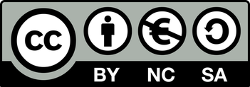
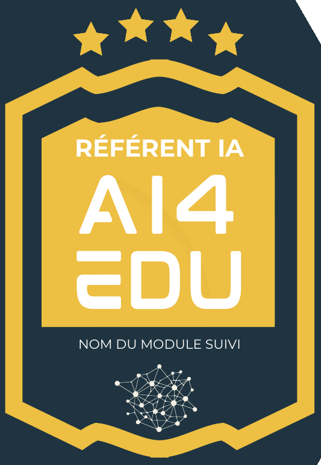
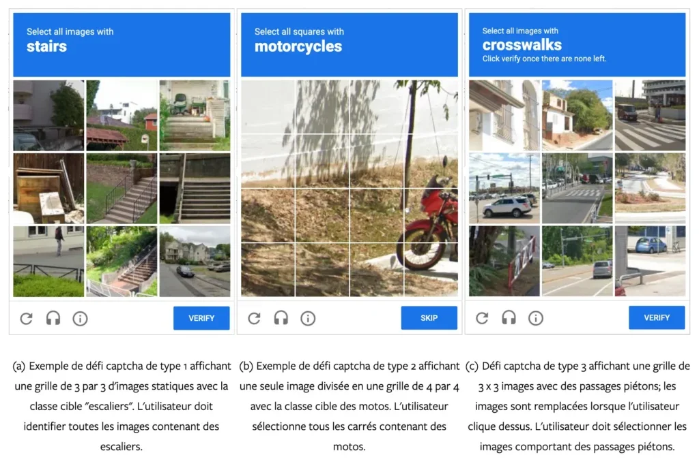

Exploiter le potentiel de l'IA dans son contexte professionnel
Module M1A · Parcours Référent·e IA
Liège · 23 et 30 novembre 2026IFPC · session 62279

Tommy Berben · Ressource partagée sous licence CC BY-NC-SA 4.0 : tu peux la réutiliser, la partager et l'adapter en citant la source, sans usage commercial et sous la même licence.
Qui suis-je ?
Tommy Berben
Enseignant de sciences et de formation numérique · Institut Sainte-Begge
M1A, pour les enseignants : Exploiter le potentiel de l'IA dans son contexte professionnel. C'est ici !
M1B, pour les directions : Soutenir le pilotage de son école grâce à l'IA.
Approfondir · au moins 2 modules parmi M2 à M9
M2 Différenciation, tutorat, remédiation, inclusionM3 Regard critique, éthique et sécuritéM4 Images, vidéos et podcastsM5 Activités ludopédagogiquesM6 Usages disciplinairesM7 Créer du code avec l'IAM8 Projets créatifs et technologiques des élèvesM9 Évaluation et travaux académiques
Thèmes résumés à partir du catalogue IFPC : les intitulés exacts varient selon les éditions.
Devenir référent·e · M10
Cultiver l'expertise collective et repenser sa posture enseignante.
On y présente un « chef-d'œuvre » : un projet qui explicite ses apprentissages et ses choix pédagogiques et éthiques.

Badge final Référent·e IA : au minimum 6 jours, soit environ 36 heures. Chaque module donne aussi un badge de compétences.
Source : technofuturtic.be/activites/referent-ia (page mise à jour le 27/08/2026, consultée le 22/11/2026).
Positionnement
Les objectifs du module
ConsigneQuel bloc attends-tu le plus ?
1 · Comprendre
Les grandes étapes du développement de l'IA et ses principes fondamentaux.
Les limites, les risques et les enjeux éthiques, pour adapter sa posture d'enseignant.
2 · Expérimenter
Analyser et choisir les outils d'IA adaptés, notamment pour l'évaluation et la différenciation.
Créer du contenu original et explorer des usages concrets.
Expérimenter l'IA dans son propre contexte professionnel.
3 · Prompter et partager
Rédiger et structurer un prompt efficace.
Optimiser ses prompts pour obtenir des résultats pertinents et créatifs.
Partager des bonnes pratiques entre pairs.
Le programme des deux journées
1Accueil et un peu de paperasseVous êtes ici · objectifs, programme, cadre, formulaire FSE, Classroom et badge25-30 min
2Se découvrir… et découvrir l'IAPadlet, « Si j'étais une IA », questions Wooclap, IA ou pas IA ?45-55 min
3Aux origines de l'IAFrise à reconstituer, vidéo, définitions officielles, intelligence biologique, science-fiction70-80 min
4Les coulisses de l'IAQuick, Draw!, « Définis-moi un chien », entraîner une IA avec Vittascience, ML ou DL ?80-95 min
5Réfléchir avant d'utiliserFeu vert ou stop ?, biais algorithmiques, posture enseignante, carte des assistants IA, bilan60-70 min
J2RepriseRetour sur le jour 1 et une partie de « IA ou pas IA ? »
6L'art du promptChoisir son outil (compar:IA, IA locale, sobriété), écrire un bon prompt, usages en éducation : différencier, évaluer, gagner du temps
7Du prompt au médiaRédiger des prompts pour générer des images
8Le chatbot personnaliséQuand l'IA assiste l'élève dans une tâche bien cadrée
★Mission pratique et clôtureCréer un contenu utile pour sa classe (20 à 30 min en autonomie), partage, badge et retour collectif
Durées indicatives, sans les pauses. Le programme s'ajuste selon les besoins du groupe.
Notre cadre pour ces deux jours
On teste, on se trompe
Essayer, rater, recommencer : avec l'IA, c'est la méthode, pas un échec.
Zéro donnée personnelle
Dans les outils testés : pas de nom, pas de photo, rien qui permette de reconnaître quelqu'un. Ni un élève, ni un collègue, ni toi.
Personne ne reste bloqué
Pas de compte, pas d'outil favori ? On travaille en binôme.
Les questions en attente
Une question sans réponse immédiate ? On la note et on y revient plus tard.
Indice : le système a-t-il appris à partir de données, ou applique-t-il une règle fixe écrite à l'avance ?
🌡️Le thermostat allume le chauffage dès qu'il fait moins de 19 °C.
Une règle fixe écrite par un humain : « si… alors ». Rien n'est appris. Un thermostat qui apprend tes habitudes, lui, utilise de l'IA.
📱Mon smartphone se déverrouille en reconnaissant mon visage.
Un modèle entraîné sur de très nombreux visages compare tes traits à ceux qui ont été enregistrés.
💬Une plateforme vidéo ajoute des sous-titres automatiques.
Reconnaissance automatique de la parole : un modèle a appris à associer des sons à des mots.
🧭Le GPS calcule mon itinéraire et annonce l'heure d'arrivée.
Le plus court chemin : un algorithme classique. La prévision du trafic et de l'heure d'arrivée : souvent de l'apprentissage automatique.
🎬Une plateforme de streaming me propose une série « pour moi ».
Un système de recommandation repère des régularités dans tes choix et dans ceux de profils proches.
✍️Le traitement de texte souligne une faute d'orthographe.
Un correcteur classique compare à un dictionnaire et à des règles. Les récents y ajoutent des modèles de langue (grammaire, style).
🚦Le feu passe au vert toutes les 90 secondes, jour et nuit.
Un cycle programmé à l'avance : aucune donnée analysée, aucun apprentissage.
📧Ma messagerie classe un courriel dans les indésirables.
Les filtres actuels reposent surtout sur l'apprentissage automatique, entraîné sur des millions de courriels signalés, complété par quelques règles fixes.
Ce que l'on retient
Vérification expressQuelle différence entre un thermostat classique et un filtre anti-spam ?
1L'IA est déjà partout dans notre quotidien… souvent sans qu'on la remarque.
2Ce qui compte, c'est le fonctionnement : la plupart des systèmes d'IA actuels ont appris à partir de données, là où un automatisme suit des règles fixes.
3Nos représentations sont variées : c'est notre point de départ pour construire une compréhension commune.
Et maintenant ? Remontons le temps : aux origines de l'IA.
3
Aux origines de l'IA
Jeu de cartes
La frise chronologique · manche 1
15 minGroupes de 4
ConsigneReconstituez une frise des technologies.
Distribuez 4 ou 5 cartes par joueur.
Retournez une carte du tas : c'est le repère de départ.
À tour de rôle, placez une carte avant, après ou entre celles déjà posées.
Vérifiez : correct, la carte reste. Erreur, défaussez-la et piochez-en une autre.
Le premier à poser toutes ses cartes sans erreur gagne !
Clique sur une carte pour découvrir ce qu'elle cache.
Ce que la frise ne dit pas encore
2012Un réseau de neurones profond pulvérise les records de reconnaissance d'images : l'apprentissage profond décolle.
2016AlphaGo bat Lee Sedol, l'un des meilleurs joueurs mondiaux de go.
2017Des chercheurs publient l'architecture Transformer, à la base des grands modèles de langage.
2022ChatGPT est lancé le 30 novembre : l'IA générative arrive dans le grand public.
2024Le règlement européen sur l'IA entre en vigueur. Des prix Nobel récompensent des travaux liés à l'IA.
2025DeepSeek-R1, un modèle chinois que chacun peut télécharger et faire tourner librement, rivalise avec les meilleurs. Les assistants deviennent des « agents » qui agissent pour toi.
Infographie « Les dates clés de l'IA » (Supertilt) : présentée en salle (ressource tierce, licence à confirmer).
Représentations
Question au groupe
Pour vous, c'est quoi l'intelligence artificielle ?
Des technologies informatiques capables d'imiter des comportements et des capacités généralement associés à l'intelligence biologique : raisonner, apprendre, créer, résoudre des problèmes, reconnaître une voix ou un visage, décider, comprendre le langage…
Pour y arriver : des algorithmes complexes, nourris par des données numériques.
Analyse en binôme
Deux définitions officielles
Par deux, 3 min : quels points communs ? Qu'ajoute la loi européenne ?
UNESCO
Recommandation sur l'éthique de l'IA, adoptée par les 193 États membres en 2021
Des systèmes capables de traiter des données et de l'information par un processus s'apparentant à un comportement intelligent, comportant généralement des fonctions de raisonnement, d'apprentissage, de perception, d'anticipation, de planification ou de contrôle.
Union européenne
Règlement sur l'IA (UE) 2024/1689, article 3
Un système automatisé conçu pour fonctionner à différents niveaux d'autonomie, qui peut faire preuve d'une capacité d'adaptation après son déploiement et qui, pour des objectifs explicites ou implicites, déduit, à partir des entrées qu'il reçoit, la manière de générer des sorties telles que des prédictions, du contenu, des recommandations ou des décisions pouvant influencer des environnements physiques ou virtuels.
Des données en entréeUn raisonnement ou une déductionApprentissage, autonomie, adaptationDes résultats en sortie
Deux définitions, quelques nuances
UNESCO
Union européenne
Le mot « intelligent »
Parle d'un comportement intelligent.
Évite le mot : un système automatisé qui « déduit ».
Ce qui est mis en avant
Des capacités : raisonner, apprendre, percevoir, planifier…
Un fonctionnement : autonomie, adaptation après la mise en service.
Les résultats
Pas détaillés.
Prédictions, contenus, recommandations, décisions… qui peuvent influencer le monde réel ou virtuel.
Le statut du texte
Une recommandation éthique : elle oriente.
Un règlement : il délimite ce que la loi encadre.
Et notre thermostat, alors ?
Ce que la loi exclut
Le règlement précise que sa définition ne couvre pas les systèmes fondés sur des règles définies uniquement par des humains pour exécuter automatiquement des opérations.
Le thermostat à 19 °C ou le feu tricolore ne sont donc pas des systèmes d'IA au sens de la loi.
Règlement (UE) 2024/1689, considérant 12
Ce qui concerne l'école
Depuis le 2 février 2025Interdiction de la reconnaissance des émotions dans les établissements d'enseignement (sauf raisons médicales ou de sécurité). Art. 5
Depuis le 2 février 2025Les organisations qui utilisent l'IA prennent des mesures pour la maîtrise de l'IA de leur personnel. Art. 4
À venir : 2 décembre 2027Règles pour les systèmes « à haut risque », dont certains usages en éducation (admission, évaluation des apprentissages, surveillance des examens). Prévu d'abord en août 2026, puis reporté. Annexe III
Règlement (UE) 2024/1689 sur l'IA, modifié par le règlement (UE) 2026/1744 « omnibus numérique » du 8 juillet 2026, en vigueur depuis le 27 juillet 2026.
Classement collectif
Humain, IA… ou les deux ?
L'intelligence biologique : les capacités d'un être vivant à apprendre, raisonner, résoudre des problèmes et s'adapter, grâce à son système nerveux et à son expérience. (d'après Wikipédia)
👀Reconnaître un visage dans une foule.
Les deux y arrivent, par des moyens très différents. L'IA se trompe plus souvent sur les profils peu présents dans ses données.
🗣️Apprendre sa langue maternelle en quelques années de conversations.
Un modèle de langage est entraîné sur bien plus de textes qu'un humain n'en lira dans toute sa vie.
📚Résumer 200 pages en quelques secondes.
Une vitesse hors de portée humaine… mais le résumé peut contenir des erreurs : il se vérifie.
😴Ressentir de la fatigue, de la joie ou de l'ennui.
Une IA peut imiter des émotions dans ses réponses, sans les éprouver.
✒️Écrire un poème.
L'IA produit un texte à partir de régularités statistiques ; l'humain y met une intention et un vécu.
🏫Sentir qu'un élève est inquiet en le voyant entrer en classe.
Des outils prétendent détecter les émotions, mais la loi européenne les interdit à l'école. Lire une situation reste humain.
L'influence de la science-fiction
Robots conscients, machines menaçantes… Ces images façonnent nos peurs et nos attentes. Vrai ou faux ?
Les IA actuelles ont une conscience.
Rien ne l'indique : elles produisent des réponses plausibles, sans conscience ni intentions. L'« IA forte » reste théorique.
Une IA, c'est forcément un robot.
La plupart des IA sont des logiciels invisibles. Et un robot n'utilise pas toujours d'IA (Unimate).
Même très polyvalentes, les IA actuelles restent des IA « faibles ».
Le terme est discuté pour les grands modèles, mais aucun ne correspond à l'IA forte : ni conscience, ni compréhension propre.
Ce que l'on retient
Vérification expressQuelle carte de la frise n'est pas de l'IA au sens actuel ? Pourquoi ?
1L'IA a plus de 70 ans : elle est passée des règles écrites à la main aux modèles qui apprennent à partir de données.
2Pas de définition unique, mais des repères communs : des données en entrée, une déduction, des résultats en sortie.
3L'IA imite certaines capacités humaines, sans conscience ni émotions.
Et maintenant ? Passons dans les coulisses : comment une IA apprend-elle ?
4
Les coulisses de l'IA
Expérimentation
Quick, Draw!
5 minSeul·e, puis avec ton voisin
ObjectifDécouvre comment une IA reconnaît un dessin.
Va sur Quick, Draw! (QR code ou lien).
Dessine l'objet proposé en moins de 20 secondes.
Observe : l'IA essaie de deviner en direct.
Compare avec ton voisin : qu'est-ce qui l'aide ou la trompe ?
Un modèle a été entraîné sur des dizaines de millions de dessins de joueurs.
Chaque dessin porte une étiquette : le mot qui était demandé.
Pendant que tu dessines, il calcule la probabilité que ton trait corresponde à chaque catégorie apprise.
Ce que ça montre
C'est de l'apprentissage supervisé : apprendre à partir d'exemples étiquetés.
L'IA reconnaît des formes, elle ne sait pas ce qu'est un vélo.
Tes dessins peuvent à leur tour enrichir les données.
Derrière le jeu, une mécanique bien réelle
Ce que Quick, Draw! fait avec tes gribouillis, des algorithmes le font chaque jour autour de toi.
🎬
Streaming
Devine la série qui va te plaire.
✉️
Ta boîte mail
Trie les courriels indésirables.
🌐
Traduction automatique
Traduit une phrase en tenant compte du contexte.
🎙️
Reconnaissance vocale
Transforme ta voix en texte, pour une dictée ou des sous-titres.
Le point commun ? Tous ont appris à partir d'exemples. Cette mécanique a un nom : l'apprentissage automatique (machine learning).
Les CAPTCHA : quand c'est toi qui étiquettes

« Sélectionne toutes les images contenant un passage piéton. » À quoi servent ces clics ?
D'abord à prouver que tu es un humain. Mais tes réponses produisent aussi des images étiquetées : pour certains services, elles aident à entraîner des modèles de reconnaissance d'images.
Défi collectif
Définis-moi un chien !
5 minTout le groupe
DéfiDonne-moi des règles pour qu'un ordinateur reconnaisse un chien sur une photo… à tous les coups.
Les règles du groupe (clique pour écrire)
Par exemple, « 4 pattes et une truffe », traduit pour l'ordinateur :
si 4 pattes et truffe alors
réponse ← « chien »sinon
réponse ← « pas un chien »
Ça marche à tous les coups ?
Et ceux-là ? Que répond le programme ?
Clique sur une carte pour voir la réponse des règles « 4 pattes + truffe ».
Impossible d'écrire toutes les règles. Alors on montre des milliers d'exemples étiquetés et la machine trouve elle-même les régularités : c'est l'apprentissage automatique.
En vidéo
Apprendre par les règles… ou par l'expérience ?
En regardantLes règles du chien, c'était quelle approche ? Et celle qui marche, alors ?
L'algorithme reçoit des données étiquetées par des humains : c'est l'apprentissage supervisé.
ChienChatChienPutoisDonnées étiquetées
« C'est quoi ? »
✓Chien✗Chat
Le modèle se construitIl analyse les caractéristiques (forme, oreilles, pelage…), se trompe, est corrigé, s'ajuste. Peu à peu, il découvre des régularités.
Apprentissage automatique · machine learning
2. La phase de prédiction (inférence)
Une donnée jamais vue
Le modèle l'analyse en s'appuyant sur ce qu'il a appris pendant l'entraînement.
« C'est un chien »Prédiction
Et si on lui montre une loutre, absente des données d'entraînement ?
Il ne connaît que les étiquettes apprises : il choisira la plus proche (putois ? chien ?), parfois avec beaucoup d'assurance. Un modèle ne sait pas dire ce qu'il ne sait pas, sauf si on l'a prévu.
Atelier
Entraîne ton IA avec Vittascience
20 minPar deux
ConsigneCrée un petit modèle capable de distinguer un chien d'un chat (ou autre chose).
Collecte : ajoute plusieurs images de chaque catégorie.
Entraînement : lance l'apprentissage.
Test : montre une image jamais vue. Correct… ou pas ?
Défi biais
Entraîne ton modèle avec des chats tous gris, puis teste un chat roux. Que se passe-t-il ? Comment corriger ?
Comment sont entraînés ChatGPT, Gemini, Claude ou Vibe ?
En plusieurs grandes phases, qui combinent les façons d'apprendre.
1
Pré-entraînement
Auto-supervisé
Prédire le mot suivant sur d'immenses quantités de textes. Le modèle apprend la langue… et beaucoup d'informations, parfois fausses.
2
Ajustement
Supervisé
Des exemples de demandes et de bonnes réponses rédigées par des humains : il apprend à suivre des consignes.
3
Renforcement
Par renforcement
Des humains ou des règles notent ses réponses : il apprend à préférer les plus utiles et les plus sûres. Les modèles « de raisonnement » s'entraînent aussi ainsi sur des problèmes vérifiables.
Au final : il prédit des mots probables. Il ne vérifie pas ce qu'il écrit.
GPT, ça veut dire quoi ?
Trois lettres qui résument comment fonctionnent la plupart des assistants conversationnels.
G
Generative
génératif
Il produit du contenu nouveau (texte, image, code…) à partir de ton prompt.
P
Pre-trained
pré-entraîné
Il a d'abord appris sur d'immenses quantités de textes : sites web, livres, code…
T
Transformer
l'architecture
Un type de réseau de neurones (2017) qui tient compte du contexte : le sens d'un mot dépend des mots autour.
« Mon avocat plaide demain » ou « un avocat bien mûr » ? Le Transformer s'appuie sur les mots voisins pour trancher.
Des poupées russes
Intelligence artificielle
Apprentissage automatique
Apprentissage profond
IA générative
Intelligence artificielle : des systèmes qui imitent des capacités associées à l'intelligence humaine.
Apprentissage automatique : des systèmes qui apprennent à partir de données au lieu de suivre des règles écrites.
Apprentissage profond : de l'apprentissage automatique avec des réseaux de neurones artificiels à nombreuses couches, inspirés de loin du cerveau.
IA générative : de l'apprentissage profond qui produit du contenu nouveau (texte, image, son, code).
Vérification
Machine learning ou deep learning ?
8 minSeul·e
ConsigneTeste tes connaissances avec ce quiz interactif.
Transparence : ce quiz a été créé avec une IA générative (Claude), à partir de ce prompt :
Je suis enseignant et je souhaite expliquer l'IA, le machine learning et le deep learning à mes étudiants. Peux-tu générer une application web présentant des cas concrets d'IA, de machine learning et de deep learning sous forme de QCM ? 10 questions, 4 réponses et un feedback. L'objectif est de comprendre la différence entre les trois dans des cas concrets.
1Utilises-tu déjà l'IA générative dans ta pratique pédagogique ?
2Si oui, dans quel but ? Préparation, différenciation, correction, créativité, évaluation…
3Si non, qu'est-ce qui te freine ?
Classement collectif
IA à usage général ou spécialisée ?
Usage général
Une même interface pour des tâches variées (rédiger, résumer, traduire, analyser, programmer…), guidée par tes consignes.
Spécialisée
Optimisée pour une tâche ou un type de contenu (musique, image, transcription, traduction…), souvent avec une interface dédiée.
Un assistant conversationnel qui rédige, résume, traduit et code.
ChatGPT, Claude, Vibe… : une interface, mille tâches.
Un traducteur de documents en ligne.
Une tâche précise, une interface dédiée (DeepL, par exemple).
Un générateur de chansons à partir d'une description.
Un seul type de contenu : la musique (Suno, par exemple).
Quick, Draw!
Il ne sait faire qu'une chose : reconnaître des dessins.
Un assistant intégré au traitement de texte et au tableur.
Un modèle général dans tes outils (Copilot, Gemini…).
Une application qui transcrit un enregistrement audio.
Une tâche précise : la reconnaissance vocale.
Ce que l'on retient
Vérification expressPourquoi un modèle entraîné avec des chats tous gris peut-il se tromper face à un chat roux ?
1Une IA apprend à partir d'exemples (entraînement), puis applique ce qu'elle a appris à de nouvelles données (prédiction).
2La quantité et la diversité des données font la qualité des réponses : des données limitées produisent erreurs et biais.
3L'IA générative prédit ce qui est probable : elle ne comprend pas et ne vérifie pas.
Et maintenant ? Réfléchir avant d'utiliser : les points de vigilance.
5
Réfléchir avant d'utiliser
Par deux
Feu vert, prudence ou stop ?
8 min + débriefingPar deux
ConsignePour chaque situation, choisis : tu fonces, tu fais attention, ou tu t'arrêtes ? Justifie à ton voisin.
Je demande des idées d'activités pour introduire la digestion en 2e secondaire.
Aucune donnée sensible. Reste à relire et adapter à ta classe.
Je colle la liste de ma classe, avec les notes, pour rédiger les appréciations du bulletin.
Données personnelles d'élèves mineurs. Travaille sur un modèle anonyme.
Je demande trois sources sur la révolution industrielle et je les cite dans mon cours.
Une IA peut inventer des références. Vérifie chacune avant de la citer.
Je fais corriger des copies anonymisées et je reporte la note proposée, sans relire.
L'IA peut aider à relire. Elle ne décide jamais de la réussite d'un élève.
Je colle un chapitre de manuel pour en tirer un quiz que je publie en ligne.
Droit d'auteur : publier n'est pas utiliser en classe. Vérifie les droits.
Je fais reformuler une consigne en langage simple pour un élève dyslexique, sans le nommer.
Bel usage pour différencier. Rien n'identifie l'élève.
Quelques points de vigilance
Risque d'erreurs
Une IA générative ne « sait » rien : elle prédit le mot le plus probable. Elle peut inventer une date, une source ou un fait avec aplomb. Réflexe : vérifier avant de diffuser.
Prompt essentiel
Un prompt vague donne une réponse vague. Contexte, ton, objectif : plus tu précises, plus la réponse est utile. Ça se travaille.
Compréhension limitée
L'IA assemble des mots selon des probabilités. Elle ne comprend ni la question ni sa réponse. Garde ton cerveau branché.
Usage critique
Une réponse d'IA n'est jamais un point final, c'est une base de travail. Trier, corriger, adapter : l'esprit critique ne se délègue pas.
Sécurité des données
Nom d'élève, bulletin, document interne : une fois collé dans un prompt, tu en perds la maîtrise. RGPD et droit d'auteur s'appliquent aussi dans un chat.
Démonstration
Les biais algorithmiques
D'où viennent-ils ?
Des discriminations déjà présentes dans la société, donc dans les textes et images d'entraînement.
De la sous-représentation d'une population dans les données.
Des choix des concepteurs : quelles données, quels réglages.
À testerPose cette question à un assistant, puis observe la réponse.
Peux-tu me citer 6 personnes qui dirigent des entreprises majeures ?
Combien de femmes ?
Quels pays, quelles origines ?
Et si tu demandes une image d'« une personne qui dirige une entreprise » ?
Des enjeux qui dépassent la classe
Lequel t'interpelle le plus ? (vote à main levée)
IA générative
Quelques bonnes pratiques
Responsabilité
Ne partage rien de sensible
Aucune donnée qui permet d'identifier un élève : ni nom, ni prénom, ni détail reconnaissable. Seulement ce qui est nécessaire. Et une IA ne décide jamais de la réussite d'un élève.
Tu commandes
Change d'IA au besoin
Tu choisis l'outil selon la tâche. Si la réponse ne convient pas, reformule… ou essaie un autre assistant.
Imprévisibilité
L'IA perd le fil
La même question peut donner des réponses différentes. Dans une longue conversation, les consignes du début s'estompent : ouvre une nouvelle discussion et rappelle le contexte.
Exige de la clarté
Garde l'esprit critique
Demande des étapes, des exemples, des sources. Puis vérifie : une réponse claire n'est pas forcément juste.
Réflexion
Moi, enseignant·e, je sers à quoi ?
1 min seul·e, puis tour de table
L'IA a réponse à presque tout… mais elle ne peut pas donner de sens.
« Des enfants ignorants entourés de ressources resteront ignorants. »André Tricot (2016)
Nécessité (encore !) de changer de posture.
Moi, enseignant·e, je fais attention à quoi ?
1
Reconnaître
son existence, en expliquant ses limites et ses bénéfices.
2
Baliser
clairement ce que les élèves peuvent faire avec l'IA… et ce qu'ils ne peuvent pas faire.
3
Accompagner
les usages, en développant l'esprit critique et en éduquant à l'art du prompt.
À toiÉcris une phrase de balisage pour ta prochaine tâche d'élèves.
ExemplePour ce travail, tu peux utiliser l'IA pour trouver des idées, pas pour rédiger. Note ce que tu lui as demandé.
Démonstration
Derrière chaque IA, une influence
Un assistant reflète les choix de ses concepteurs et les lois de son pays.
DémonstrationMême question, deux assistants : DeepSeek et un autre au choix.
Tu es historien spécialiste de la Chine. Explique ce qui s'est passé place Tian'anmen en juin 1989.
On compare
L'assistant répond-il ? Change-t-il de sujet ?
Quels mots choisit-il ?
Et sur un sujet sensible pour un autre pays ?
À retenir : aucun assistant n'est neutre. Croise les sources.
Exploration
La carte des assistants IA
10 min + débriefingSeul·e, puis avec ton voisin
ObjectifChoisis un assistant en connaissant son passeport.
Ouvre la carte (QR code ou lien).
Lis « Comment lire une fiche » : les cinq questions du passeport.
Choisis un assistant que tu utilises (ou voudrais utiliser) et lis sa fiche.
Compare avec ton voisin : lequel proposerais-tu à tes élèves, et pourquoi ?
Quels autres mots connais-tu pour dire « prompt » ?
RequêteInvitePromptInstructionConsigneCommande
Un prompt, c'est une instruction écrite que tu donnes à un modèle d'IA générative pour obtenir une réponse.
Il peut aussi contenir des documents, des images ou des exemples.
Du prompt à la réponse
Ton prompt est la donnée d'entrée d'un réseau de neurones artificiels. La réponse est sa donnée de sortie.
TexteImagePDFDonnées d'entrée(ton prompt)
TexteImageDocumentDonnées de sortie(la réponse)
Couche d'entréeCouches cachéesCouche de sortie
En réalité : des centaines de couches et des milliards de paramètres. Un prompt plus précis oriente mieux le calcul.
Exemple : générer des exercices
L'IA générative crée rapidement des exercices adaptés au niveau des élèves.
Tu précises le contexte : matière, niveau, type d'exercices.
Elle fournit énoncés et corrections… à relire !
Tu gagnes du temps en gardant ta posture critique.
Tu es professeur de sciences en 1re secondaire. Crée 8 questions à choix multiples sur le système solaire, adaptées à des élèves de 12 ans. Varie les thèmes (planètes, satellites, astéroïdes, comètes). Chaque question propose 4 réponses dont une seule correcte. Indique la bonne réponse après chaque question. Utilise un langage simple et accessible.
PersonaTâcheContraintesFormat
Pourquoi apprendre à écrire un prompt ?
À ton avis ? Trois raisons…
Une sortie de qualité
Une demande précise donne une réponse pertinente, du premier coup ou presque.
Du temps gagné
Moins d'allers-retours pour corriger ou reformuler.
Plus de sobriété
Chaque requête consomme de l'énergie : moins d'essais, moins d'impact.
Quel outil pour aujourd'hui ?
Utilise l'outil qui te paraît le plus efficace, intéressant et accessible.
ChatGPTOpenAI
GeminiGoogle
CopilotMicrosoft
ClaudeAnthropic
VibeMistral AI
Duck.aiDuckDuckGo
DeepSeekDeepSeek
Existe avec un compte scolaire, souvent plus protecteur pour les données (selon le contrat de ton école).À connaître, avec prudence (voir la carte des assistants).